set.seed(42)
source("../INPUT/FUNCTIONS/preprocess.R")
library(dplyr)
library(rsample)
library(recipes)
library(randomForest)
library(corrplot)
library(tibble)
library(purrr)
library(reshape2)
library(ggplot2)
library(plotly)
library(scatterplot3d)
library(factoextra)
library(cluster)
library(tidyverse)MNAU
Import packages
%MNAU - Used
data <- read.csv('../Input/DATA/Summary_Dataset_Used_Percentage_MNAU.csv')
data_multi <- read.csv('../Input/DATA/Summary_Dataset_Multivar_Percentage_MNAU.csv')data = preprocess(data)
data_multi = preprocess(data_multi)
glimpse(data)Rows: 16
Columns: 26
$ Type <chr> "Primary hominin interment", "Pr…
$ AccumulationType <chr> "Burial", "Burial", "Burial", "C…
$ Individuals <int> 49, 84, 6, 7, 6, 2, 5, 43, 13, 1…
$ Cranium <dbl> 0.7755102, 0.8095238, 0.8333333,…
$ Mandible <dbl> 0.6938776, 0.7619048, 0.8333333,…
$ Cervical <dbl> 0.74052478, 0.48979592, 0.166666…
$ Thoracic <dbl> 0.76870748, 0.52976190, 0.333333…
$ Lumbar <dbl> 0.78775510, 0.60000000, 0.400000…
$ Sacrum <dbl> 0.79591837, 0.61904762, 0.500000…
$ Sternum <dbl> 0.00000000, 0.00000000, 0.333333…
$ Clavicle <dbl> 0.82653061, 0.61309524, 0.500000…
$ Rib <dbl> 0.76615646, 0.49255952, 0.229166…
$ Scapula <dbl> 0.7959184, 0.6250000, 0.3333333,…
$ Humerus <dbl> 0.7448980, 0.7678571, 0.7500000,…
$ Radius <dbl> 0.78571429, 0.72023810, 0.666666…
$ Ulna <dbl> 0.75510204, 0.64880952, 0.750000…
$ Carpal <dbl> 0.663265306, 0.288690476, 0.2291…
$ Innominate <dbl> 0.78571429, 0.71428571, 0.583333…
$ Femur <dbl> 0.8775510, 0.7916667, 0.6666667,…
$ Patella <dbl> 0.6938776, 0.4583333, 0.1666667,…
$ Tibia <dbl> 0.6734694, 0.7202381, 0.7500000,…
$ Fibula <dbl> 0.6938776, 0.6190476, 0.5833333,…
$ Tarsal <dbl> 0.63265306, 0.48639456, 0.261904…
$ Hand..metacarpals...manual.phalanges. <dbl> 0.658968851, 0.373746867, 0.1535…
$ Foot..metatarsals...pedal.phalanges. <dbl> 0.436627282, 0.272869674, 0.1271…
$ Cluster_Pnas <chr> "A", "A", "B", "C", "C", "C", "C…rownames(data) [1] "Pottery_Mound_Pueblo_IV" "Kuaua_Pueblo_Pueblo_IV"
[3] "Skhul_Layer_B" "Fontbregoua_H1"
[5] "Fontbregoua_H3" "Gran_Dolina_TD6"
[7] "El_Mirador_MIR4A" "Krapina"
[9] "AL_333" "Unscavenged_human_corpses_WA"
[11] "Scavenged_human_corpses_WA" "Mapungubwe_leopard_kills"
[13] "Leopard_refuse" "Misgrot_Cave"
[15] "Sima_de_los_Huesos" "Dinaledi" # Define the columns for which you want to count the labels
columns_to_count <- c("Type", "AccumulationType", "Individuals", "Cluster_Pnas")
# Function to count labels in each specified column
count_labels <- function(data, columns) {
sapply(data[columns], function(column) table(column))
}
# Use the function to count labels
label_counts <- count_labels(data, columns_to_count)
# Print the counts
label_counts$Type
column
Hominin cannibalism/ secondary interment
5
Leopard refuse
2
Natural Baboon accumulation
1
Nonanthropogenic hominin accumulation
1
Possible hominin deliberate disposal
2
Possible Primary hominin interment
1
Primary hominin interment
2
Scavenged human corpses
1
Unscavenged human corpses
1
$AccumulationType
column
Burial Cannibalism/Mass Grave
5 5
Carnivore intervention Non-human/ non-carnivore intervention
3 3
$Individuals
column
2 5 6 7 8 13 17 18 43 45 49 84
1 1 2 3 1 2 1 1 1 1 1 1
$Cluster_Pnas
column
A B C D
3 3 6 4 Take SH out of the training set (to avoid data leakage)
split <- split_train_SH(data)
data <- split$train_data
sh <- split$sh_dataCenter and scale numeric data
Normalize numeric data to have a standard deviation of one and a mean of zero.
# Store original row names of the datasets
data_row_names <- rownames(data)
sh_row_names <- rownames(sh)
# Step 1: Create a recipe
recipe <- recipe(~ ., data = data) %>%
step_normalize(all_predictors(), -all_of(c("Type", "AccumulationType", "Individuals", "Cluster_Pnas")))
# Step 2: Fit the recipe to the training set
fitted_recipe <- prep(recipe, training = data)
# Step 3: Apply the transformation to both training and test sets
data_transformed <- bake(fitted_recipe, new_data = data)
sh_transformed <- bake(fitted_recipe, new_data = sh)
# Reattach the row names
rownames(data_transformed) <- data_row_names
rownames(sh_transformed) <- sh_row_namesFeature selection
In Pnas RF with labels has been used (!data leakage).
# Ensure reproducibility
set.seed(42)
# Prepare the label and features
label <- data$Type
data_rf_sup <- data %>% select(-c("Type", "AccumulationType", "Individuals", "Cluster_Pnas"))
# Convert 'Type' to a factor
label <- as.factor(data$Type)
# Train the RandomForest model
rf_model_sup <- randomForest(x = data_rf_sup, y = label, importance = TRUE)
# Get the feature importance
feature_importance_ <- importance(rf_model_sup)
# Print the feature importance
feature_importance_[,c(10:11)][] MeanDecreaseAccuracy MeanDecreaseGini
Cranium 2.6450815 0.3925055
Mandible -0.5848239 0.4020929
Cervical 0.7241395 0.4715153
Thoracic 2.1384554 0.4792270
Lumbar 0.5352871 0.4397056
Sacrum 2.9055546 0.3978595
Sternum 1.4874660 0.3356596
Clavicle 1.3749003 0.7051434
Rib 1.3763413 0.5330900
Scapula 1.7182627 0.3604157
Humerus 2.9870490 0.5914351
Radius -0.6440809 0.4776309
Ulna 0.7378602 0.3554231
Carpal 4.6985887 0.6754343
Innominate 4.6840445 0.6086924
Femur 4.4059527 0.7150569
Patella 0.3310926 0.3090530
Tibia 1.2701655 0.5279150
Fibula 2.5274423 0.5567144
Tarsal 6.1502032 0.8700476
Hand..metacarpals...manual.phalanges. 6.4488931 0.7742747
Foot..metatarsals...pedal.phalanges. 2.9254873 0.6739081# Selecting MeanDecreaseAccuracy
mean_decrease_accuracy <- feature_importance_[, "MeanDecreaseAccuracy"]
# Filter features where MeanDecreaseAccuracy is greater than 5
important_features_ <- feature_importance_[mean_decrease_accuracy > 3.4, ]
# Print the important features
important_features_[,c(10:11)] MeanDecreaseAccuracy MeanDecreaseGini
Carpal 4.698589 0.6754343
Innominate 4.684045 0.6086924
Femur 4.405953 0.7150569
Tarsal 6.150203 0.8700476
Hand..metacarpals...manual.phalanges. 6.448893 0.7742747# Save top 7 features
columns_rf_sup<- rownames(as.data.frame(important_features_[,c(10:11)]))
columns_rf_sup[1] "Carpal"
[2] "Innominate"
[3] "Femur"
[4] "Tarsal"
[5] "Hand..metacarpals...manual.phalanges."Random Forrest feature importance with self-label (without data leakage)
set.seed(42)
data_rf <- data |> select(-c("Type", "AccumulationType", "Individuals", "Cluster_Pnas"))
# Create artificial labels where each row is its own class
artificial_labels <- seq_len(nrow(data_rf))
# Combine the data with the artificial labels
data_with_labels <- cbind(data_rf, artificial_labels)
# Train Random Forest model
rf_model <- randomForest(artificial_labels ~ ., data = data_with_labels, importance = TRUE)
# Extract feature importance based on Mean Decrease in Gini
feature_importance <- importance(rf_model) # type = 1 for %IncMSE
feature_importance %IncMSE IncNodePurity
Cranium 3.07896587 14.709428
Mandible 0.53003972 8.280381
Cervical -0.30101111 7.981971
Thoracic 2.94487912 8.185263
Lumbar 0.70576621 8.060364
Sacrum 0.73057831 4.140110
Sternum 1.66472991 18.249388
Clavicle 3.44206626 32.616016
Rib 0.91958708 5.002329
Scapula -0.23365134 5.660383
Humerus -0.68487319 8.356400
Radius -0.02810234 6.771984
Ulna -1.24039461 6.238966
Carpal 2.86021142 15.220026
Innominate 2.49094726 4.478900
Femur 1.72176956 11.771362
Patella 0.91218927 8.128162
Tibia 0.37266590 8.673266
Fibula 0.31578101 6.310714
Tarsal 3.34023902 19.760044
Hand..metacarpals...manual.phalanges. 3.09650809 19.201943
Foot..metatarsals...pedal.phalanges. 2.96441420 15.019968We are going to use names(featrue_importance[feature_importance > 2])
# Selecting MeanDecreaseAccuracy
mean_decrease_accuracy <- feature_importance[,"%IncMSE"]
# Filter features where MeanDecreaseAccuracy is greater than 5
important_features_ <- feature_importance_[mean_decrease_accuracy > 2, ]
# Print the important features
columns_rf <- rownames(important_features_[,c(10:11)])
columns_rf[1] "Cranium"
[2] "Thoracic"
[3] "Clavicle"
[4] "Carpal"
[5] "Innominate"
[6] "Tarsal"
[7] "Hand..metacarpals...manual.phalanges."
[8] "Foot..metatarsals...pedal.phalanges." Unsupervised Feature Selection with Random Forests (UFSRF)
#TodoSHAP
#TodoFeature correlation heatmap
data_plot_cor = abbreviated_columns(data)# Correlation matrix
cor_matrix <- cor(data_plot_cor[sapply(data_plot_cor, is.numeric)], use = "complete.obs")
melted_cor_matrix <- melt(cor_matrix)
ggplot(melted_cor_matrix, aes(Var1, Var2, fill = value)) +
geom_tile() +
scale_fill_gradient2(low = "blue", high = "red", mid = "white", midpoint = 0) +
#theme(axis.text.x = element_text(angle = 90, vjust = 0.5, hjust=1)) + # Rotate x-axis labels
#theme_minimal() +
labs(title = "Correlation Matrix", x = "", y = "")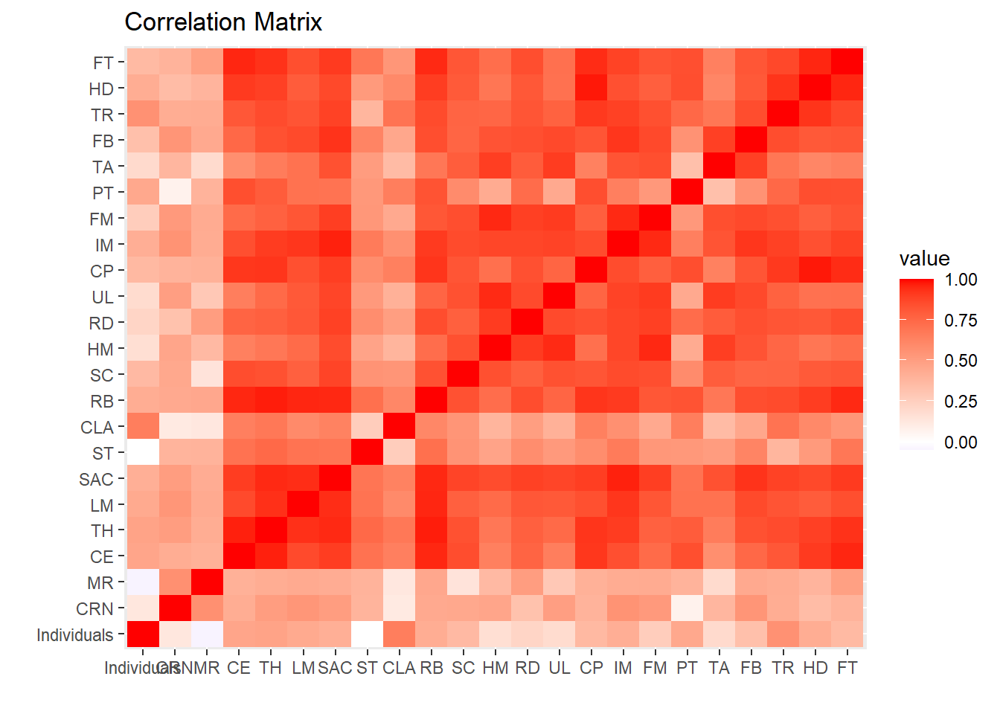
corrplot(cor_matrix, #correlation matrix
method = "color", #show coloured blocks
is.corr = TRUE, #input matrix is a correlation matrix
type = "upper", #show only upper diagonal of correlogram
order = "AOE", #Hierarchical clustering order
hclust.method = "average", #using the average linkage distance measure
addCoef.col = "black", #show numerical value of coefficient
tl.col = "black", #text color of data label
tl.cex = 0.5, #text size of data label
rect.lwd = 3,#text size of data label
tl.srt = 90, #text rotation of data label
cl.cex = 1, #text size of color-legend label
number.cex = 0.5, #text size of correlation coefficient
diag = FALSE, #hide coefficient on the principal diagonal
)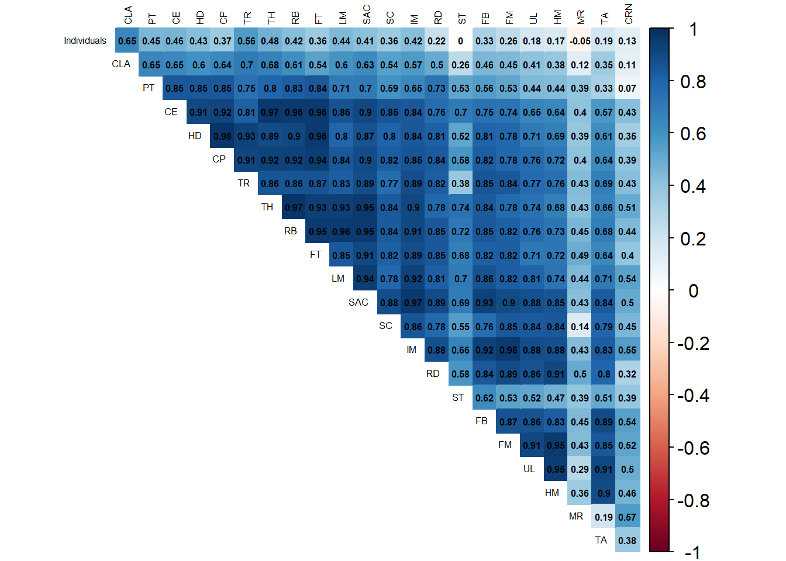
corrplot(cor_matrix, #correlation matrix
method = "color", #show coloured blocks
is.corr = TRUE, #input matrix is a correlation matrix
type = "upper", #show only upper diagonal of correlogram
order = "hclust", #Hierarchical clustering order
hclust.method = "average", #using the average linkage distance measure
addCoef.col = "black", #show numerical value of coefficient
tl.col = "black", #text color of data label
tl.cex = 0.5, #text size of data label
rect.lwd = 3,#text size of data label
tl.srt = 90, #text rotation of data label
cl.cex = 1, #text size of color-legend label
number.cex = 0.5, #text size of correlation coefficient
diag = FALSE, #hide coefficient on the principal diagonal
)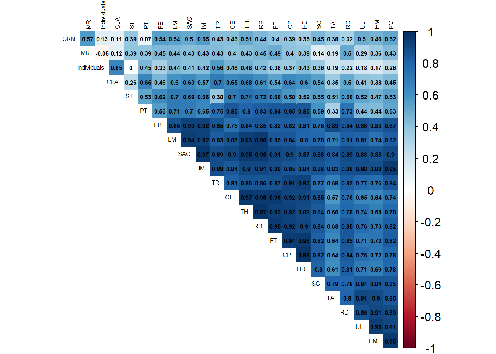
Based on feature correlation and clustering, merge bone subcategories into its categories:
“Vertebra”= {“Cervical”, “Thoracic”, “Lumbar”, “Sacrum”,“Rib”}
“Arm” = {“Humerus”, “Radius”, “Ulna”}
“Leg” = {“Femur”, “Tibia”, “Fibula” }
“Extremities”: {“Carpal”, “Tarsal”, “Hand..metacarpals…manual.phalanges.”, “Foot..metatarsals…pedal.phal
## Define data_cor data set
data_cor = merge_bone_cat_by_mean(data)Define list of data sets to work with:
list_of_dfs <- list(data, data[columns_rf_sup] , data[columns_rf], data_cor)Dimension Reduction
PCA
# PCA
data_pca <- data |> select(-all_of(columns_to_count))
pca_result <- prcomp(data_pca, center = TRUE, scale. = TRUE)
X_pca <- pca_result$x[,1:6]
X_pca PC1 PC2 PC3 PC4
Pottery_Mound_Pueblo_IV 5.61051000 1.87665597 -1.22755981 1.400037477
Kuaua_Pueblo_Pueblo_IV 3.09911892 0.24179942 -0.77431334 1.176076191
Skhul_Layer_B 1.15887496 -1.14990743 -0.06255997 0.195046104
Fontbregoua_H1 -3.95400466 -0.02701569 1.47536160 0.426595859
Fontbregoua_H3 -3.11786757 -0.61063694 -2.99793937 -1.125218352
Gran_Dolina_TD6 -3.42870363 2.22489835 0.63630773 0.867591624
El_Mirador_MIR4A -4.10742509 -0.30005566 1.56970907 -0.009944834
Krapina -4.13518121 0.72973487 -0.42940008 -0.652451941
AL_333 -4.42348534 0.55311758 -0.15836880 -0.296612857
Unscavenged_human_corpses_WA 8.30073178 0.80197592 0.77066787 -1.332111535
Scavenged_human_corpses_WA 3.37784341 0.83197084 1.03649953 -1.358202377
Mapungubwe_leopard_kills 2.54486651 -1.95437699 0.38280761 -0.160562651
Leopard_refuse 1.47771591 -2.76309280 0.23867006 1.087919071
Misgrot_Cave -0.08226468 -0.69814017 -0.13114599 -0.305345264
Dinaledi -2.32072932 0.24307273 -0.32873613 0.087183486
PC5 PC6
Pottery_Mound_Pueblo_IV -0.91631780 -0.39415535
Kuaua_Pueblo_Pueblo_IV -0.55507179 0.35613047
Skhul_Layer_B -0.04574962 1.45002360
Fontbregoua_H1 -0.75117650 0.03343287
Fontbregoua_H3 0.27887479 0.24887731
Gran_Dolina_TD6 1.88065511 0.54591863
El_Mirador_MIR4A -0.70165881 -0.38898866
Krapina -0.28204008 -0.33063753
AL_333 0.18043564 -0.28023374
Unscavenged_human_corpses_WA 1.17155275 -0.73916109
Scavenged_human_corpses_WA -1.01566266 0.93407047
Mapungubwe_leopard_kills 0.39095927 0.43238942
Leopard_refuse 0.77824349 -0.55479738
Misgrot_Cave -0.61910912 -1.04725279
Dinaledi 0.20606533 -0.26561623## Plot 3D pca
df_X_pca = as.data.frame(X_pca)
plot_ly(df_X_pca,x=~PC1,y=~PC2,z=~PC3, color = ~label, type = 'scatter3d', mode = 'markers')Warning in RColorBrewer::brewer.pal(N, "Set2"): n too large, allowed maximum for palette Set2 is 8
Returning the palette you asked for with that many colors
Warning in RColorBrewer::brewer.pal(N, "Set2"): n too large, allowed maximum for palette Set2 is 8
Returning the palette you asked for with that many colors# Perform PCA
pca_result <- prcomp(data_pca, scale. = TRUE)
# Calculate cumulative variance explained by each component
var_explained <- cumsum(pca_result$sdev^2 / sum(pca_result$sdev^2))
# Optional: Create a scree plot to visualize the variance explained
ggplot(as.data.frame(var_explained), aes(x = seq_along(var_explained), y = var_explained)) +
geom_line() +
geom_point() +
geom_hline(yintercept = 0.95, linetype = "dashed", color = "red") +
xlab("Number of Principal Components") +
ylab("Cumulative Variance Explained") +
ggtitle("Scree Plot Showing Cumulative Variance Explained by PCA Components")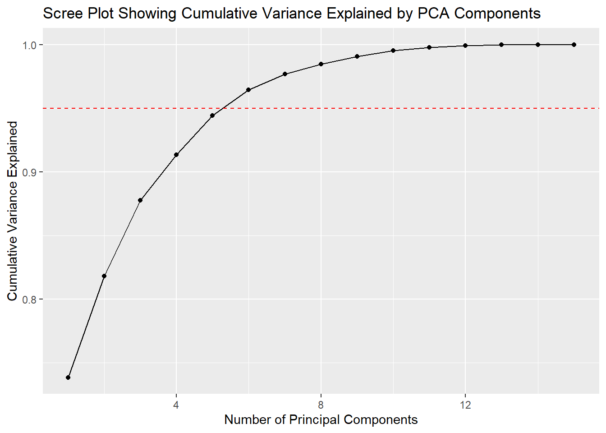
LDA
#library(MASS)
# LDA
#cols_lda <- setdiff(names(data), c("Type","Individuals", "Cluster_Pnas"))
#data_lda <- data[cols_lda]
#lda_result <- lda(AccumulationType ~ ., data = data_lda)
#X_lda <- as.data.frame(predict(lda_result, newdata = data_lda)$x)
# Create a 3D scatter
#plot_ly(X_lda, x = ~LD1, y = ~LD2, z = ~LD3, color = ~data$AccumulationType, type = 'scatter3d', mode = 'markers')# LDA
#cols_lda <- setdiff(names(data), c("AccumulationType","Individuals", "Cluster_Pnas"))
#data_lda <- data[cols_lda]
#lda_result <- lda(Type ~ ., data = data_lda)
#X_lda <- as.data.frame(predict(lda_result, newdata = data_lda)$x)
# Create a 3D scatter
#plot_ly(X_lda, x = ~LD1, y = ~LD2, z = ~LD3, color = ~data$Type, type = 'scatter3d', mode = 'markers')amend Dataframe list with X_pca[,c(1:6)] and X_lda
list_of_dfs <- list(data, data[, columns_rf_sup], data[, columns_rf], data_cor, X_pca[, 1:6]
#,X_lda
)Best K
Ellbow method
library(cluster)
library(broom)
set.seed(42)
cols_km <- setdiff(names(data), c("Type","AccumulationType","Individuals", "Cluster_Pnas"))
data_km <- data[cols_km]
# Create 10 models with 1 to 10 clusters
kclusts <- tibble(k = 1:7) %>%
mutate(
model = map(k, ~ kmeans(x = data_km, centers = .x, nstart = 20)),
glanced = map(model, glance)
) %>%
unnest(cols = c(glanced))
# View results
kclusts%>%
ggplot(mapping = aes(x = k, y = tot.withinss)) +
geom_line(size = 1.2, alpha = 0.5, color = "blue") +
geom_point(size = 2, color = "blue")Warning: Using `size` aesthetic for lines was deprecated in ggplot2 3.4.0.
ℹ Please use `linewidth` instead.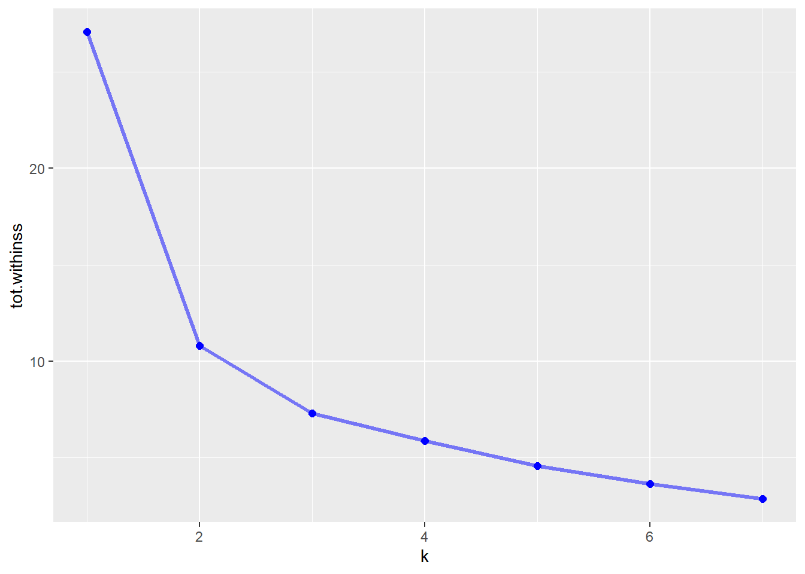
library(cluster)
library(factoextra)
#create plot of number of clusters vs total within sum of squares
fviz_nbclust(data_km, kmeans, method = "wss")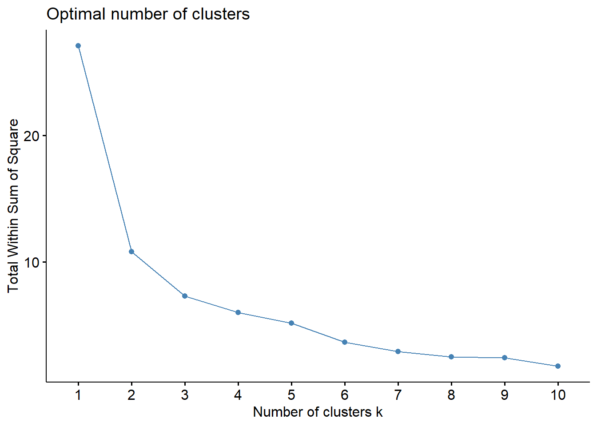
Silhouette method
fviz_nbclust(data_km, FUN=kmeans, method = "silhouette")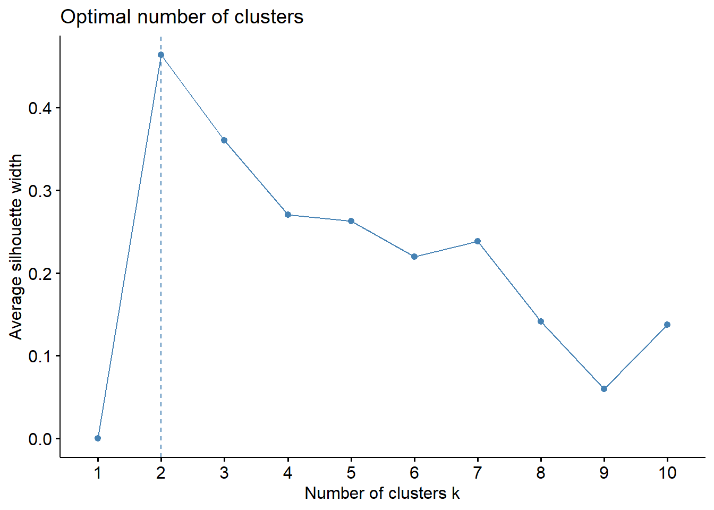
gap_stat <- clusGap(data_km, FUN = kmeans, nstart = 25, K.max = 10, B = 50)
fviz_gap_stat(gap_stat)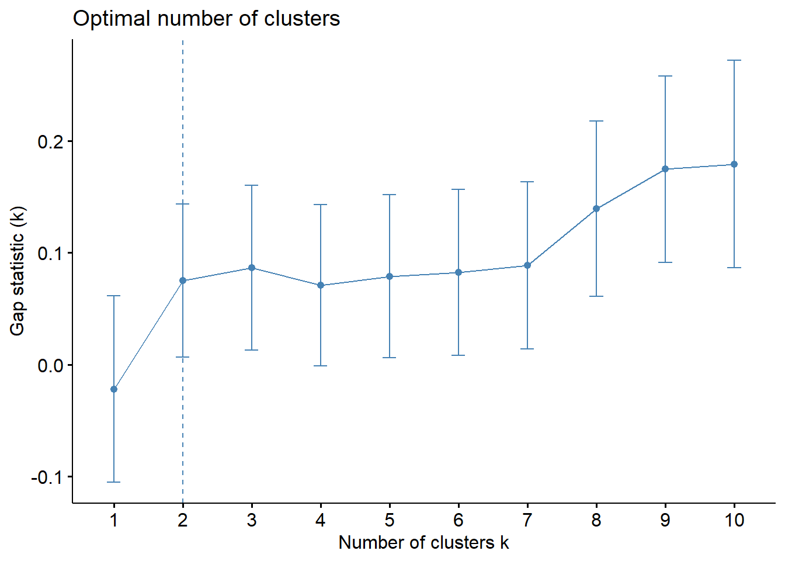
Modeling
# Load necessary libraries
library(factoextra)
library(cluster)
#Perform K-means clustering
set.seed(42)
kmeans_result <- kmeans(data_km, centers = 3, nstart = 25)
# The cluster assignments are stored in kmeans_result$cluster
sub_grp <- kmeans_result$cluster
# Visualize the clusters
fviz_cluster(list(data = data_km, cluster = sub_grp))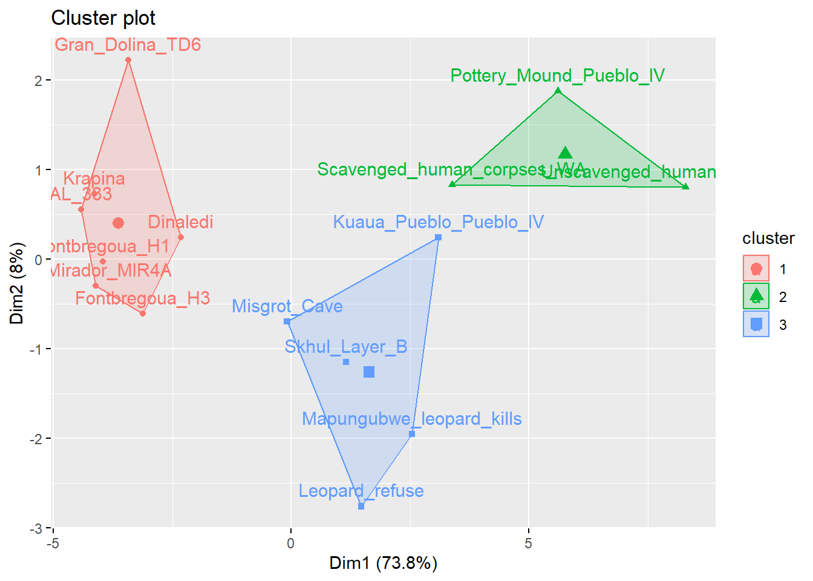
Eval
# Perform K-means clustering on the training set
set.seed(42)
kmeans_result <- kmeans(data_km, centers = 3, nstart = 25)
# Assign test set points to nearest clusters
get_nearest_cluster <- function(point, centers) {
distances <- apply(centers, 1, function(center) dist(rbind(center, point)))
return(which.min(distances))
}
# Apply the function to each row in the test set
cluster_assignments_test <- apply(sh, 1, get_nearest_cluster, centers = kmeans_result$centers)Warning in rbind(center, point): number of columns of result is not a multiple
of vector length (arg 1)Warning in dist(rbind(center, point)): NAs introduced by coercionWarning in rbind(center, point): number of columns of result is not a multiple
of vector length (arg 1)Warning in dist(rbind(center, point)): NAs introduced by coercionWarning in rbind(center, point): number of columns of result is not a multiple
of vector length (arg 1)Warning in dist(rbind(center, point)): NAs introduced by coercionsh_km = sh[cols_km]
# Combine the training and test sets for visualization
combined_df <- rbind(data_km, sh_km)
combined_clusters <- c(kmeans_result$cluster, cluster_assignments_test)
# Visualize with fviz_cluster
fviz_cluster(list(data = combined_df, cluster = combined_clusters))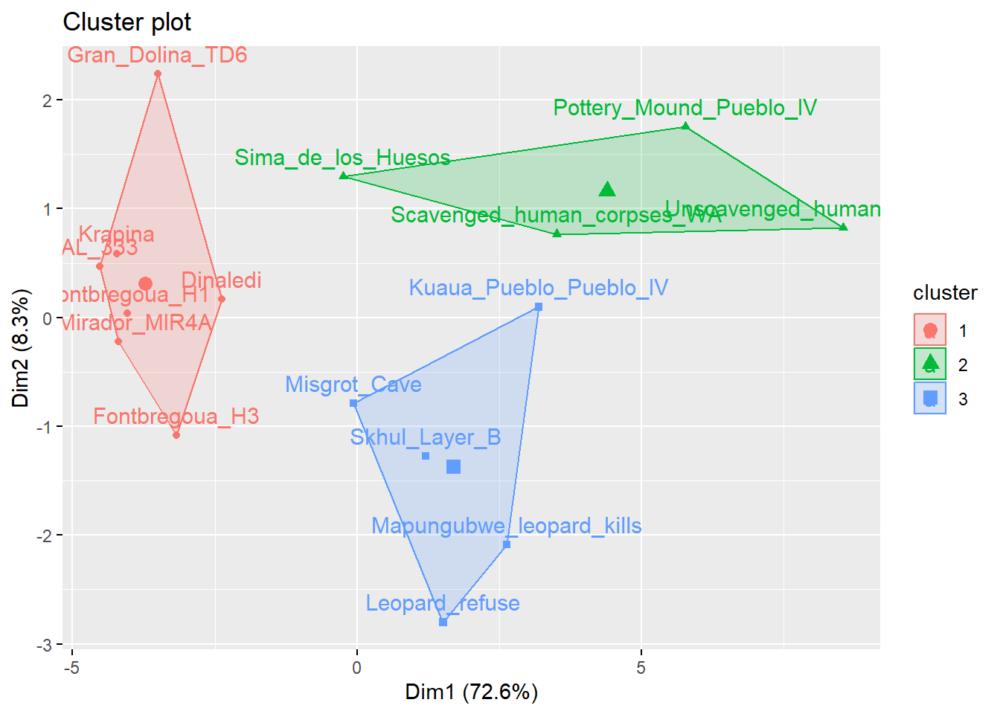
# Load necessary libraries
library(factoextra)
library(cluster)
library(dbscan)Warning: package 'dbscan' was built under R version 4.3.2
Attaching package: 'dbscan'The following object is masked from 'package:stats':
as.dendrogram# List of dataframes for evaluation
list_of_dfs <- list(data_km,data[, columns_rf_sup]
, data[, columns_rf]
#, data_cor
#,X_lda
,X_pca[, 1:6]
)
# Number of clusters to evaluate for K-means
k_values <- c(3, 4, 5)
# Hyperparameters for DBSCAN (example ranges)
eps_values <- seq(0.1, 1, 0.2)
minPts_values <- c(5, 10, 15)
# Parameters for hierarchical clustering
hclust_methods <- c("ward.D", "single", "complete", "average")
# List to store results and best models
results <- list()
best_models <- list(kmeans = list(score = -Inf, model = NULL),
dbscan = list(score = -Inf, model = NULL),
hclust = list(score = -Inf, model = NULL))
# Function to perform K-means clustering
perform_kmeans <- function(data, k, method) {
set.seed(42)
kmeans_result <- kmeans(data, centers = k, nstart = 25, algorithm = method)
silhouette_score <- mean(silhouette(kmeans_result$cluster, dist(data))[, 3])
return(list(cluster = kmeans_result$cluster, score = silhouette_score))
}
# Function to perform DBSCAN clustering
perform_dbscan <- function(data, eps, minPts) {
# Perform DBSCAN clustering
dbscan_result <- dbscan::dbscan(data, eps = eps, minPts = minPts)
# Exclude noise points (cluster = 0) from silhouette score calculation
valid_clusters <- dbscan_result$cluster[dbscan_result$cluster != 0]
valid_data <- data[dbscan_result$cluster != 0, ]
# Check if there are valid clusters to avoid errors in silhouette calculation
if (length(unique(valid_clusters)) > 1) {
silhouette_score <- mean(silhouette(valid_clusters, dist(valid_data))[, 3])
} else {
# Assign a default low score if there's only one cluster or none
silhouette_score <- -1
}
return(list(cluster = dbscan_result$cluster, score = silhouette_score))
}
# Function to perform hierarchical clustering
perform_hclust <- function(data, method, k) {
hc <- hclust(dist(data), method = method)
clusters <- cutree(hc, k = k)
silhouette_score <- mean(silhouette(clusters, dist(data))[, 3])
return(list(cluster = clusters, score = silhouette_score))
}
# Loop through each dataframe
for (i in seq_along(list_of_dfs)) {
df <- list_of_dfs[[i]]
# K-means
for (k in k_values) {
for (method in c("Hartigan-Wong", "Lloyd", "Forgy",
"MacQueen")) {
result <- perform_kmeans(df, k, method)
if (result$score > best_models$kmeans$score) {
best_models$kmeans <- list(score = result$score, model = result$cluster, dataframe = i, k = k, method = method)
}
}
}
# DBSCAN
for (eps in eps_values) {
for (minPts in minPts_values) {
result <- perform_dbscan(df, eps, minPts)
if (result$score > best_models$dbscan$score) {
best_models$dbscan <- list(score = result$score, model = result$cluster, dataframe = i, eps = eps, minPts = minPts)
}
}
}
# Hierarchical Clustering
for (method in hclust_methods) {
for (k in k_values) {
result <- perform_hclust(df, method, k)
if (result$score > best_models$hclust$score) {
best_models$hclust <- list(score = result$score, model = result$cluster, dataframe = i, k = k, method = method)
}
}
}
}
# Best models
best_models$kmeans
$kmeans$score
[1] 0.6380355
$kmeans$model
Pottery_Mound_Pueblo_IV Kuaua_Pueblo_Pueblo_IV
1 3
Skhul_Layer_B Fontbregoua_H1
3 2
Fontbregoua_H3 Gran_Dolina_TD6
2 2
El_Mirador_MIR4A Krapina
2 2
AL_333 Unscavenged_human_corpses_WA
2 1
Scavenged_human_corpses_WA Mapungubwe_leopard_kills
3 3
Leopard_refuse Misgrot_Cave
3 3
Dinaledi
3
$kmeans$dataframe
[1] 2
$kmeans$k
[1] 3
$kmeans$method
[1] "Hartigan-Wong"
$dbscan
$dbscan$score
[1] 0.7900363
$dbscan$model
[1] 0 2 2 1 1 1 1 1 1 0 2 2 2 0 0
$dbscan$dataframe
[1] 2
$dbscan$eps
[1] 0.3
$dbscan$minPts
[1] 5
$hclust
$hclust$score
[1] 0.6380355
$hclust$model
Pottery_Mound_Pueblo_IV Kuaua_Pueblo_Pueblo_IV
1 2
Skhul_Layer_B Fontbregoua_H1
2 3
Fontbregoua_H3 Gran_Dolina_TD6
3 3
El_Mirador_MIR4A Krapina
3 3
AL_333 Unscavenged_human_corpses_WA
3 1
Scavenged_human_corpses_WA Mapungubwe_leopard_kills
2 2
Leopard_refuse Misgrot_Cave
2 2
Dinaledi
2
$hclust$dataframe
[1] 2
$hclust$k
[1] 3
$hclust$method
[1] "ward.D"Multivar.
#data <- read.csv('../Input/DATA/Summary_Dataset_Multivar_Percentage_MAU.csv')data = data_multi #preprocess(data)
glimpse(data)Rows: 38
Columns: 25
$ Type <chr> "Primary hominin interment", "Pr…
$ AccumulationType <chr> "Burial", "Burial", "Burial", "B…
$ Individuals <int> 6, 49, 84, 1, 2, 6, 2, 1, 1, 1, …
$ Cranium <dbl> 1.0000000, 0.7755102, 0.8095238,…
$ Mandible <dbl> 1.0000000, 0.6938776, 0.7619048,…
$ Cervical <dbl> 0.71428571, 0.74052478, 0.489795…
$ Thoracic <dbl> 0.95833333, 0.76870748, 0.529761…
$ Lumbar <dbl> 0.83333333, 0.78775510, 0.600000…
$ Sacrum <dbl> 1.0000000, 0.7959184, 0.6190476,…
$ Sternum <dbl> 1.00000000, 0.00000000, 0.000000…
$ Clavicle <dbl> 1.0000000, 0.8265306, 0.6130952,…
$ Rib <dbl> 0.95833333, 0.76615646, 0.492559…
$ Scapula <dbl> 1.00000000, 0.79591837, 0.625000…
$ Humerus <dbl> 1.0000000, 0.7448980, 0.7678571,…
$ Radius <dbl> 1.00000000, 0.78571429, 0.720238…
$ Ulna <dbl> 1.00000000, 0.75510204, 0.648809…
$ Carpal <dbl> 0.729166667, 0.663265306, 0.2886…
$ Innominate <dbl> 1.00000000, 0.78571429, 0.714285…
$ Femur <dbl> 1.0000000, 0.8775510, 0.7916667,…
$ Patella <dbl> 0.91666667, 0.69387755, 0.458333…
$ Tibia <dbl> 1.0000000, 0.6734694, 0.7202381,…
$ Fibula <dbl> 1.0000000, 0.6938776, 0.6190476,…
$ Tarsal <dbl> 0.86904762, 0.63265306, 0.486394…
$ Hand..metacarpals...manual.phalanges. <dbl> 0.802631579, 0.658968851, 0.3737…
$ Foot..metatarsals...pedal.phalanges. <dbl> 0.258771930, 0.436627282, 0.2728…rownames(data) [1] "Hummingbird_Pueblo_Pueblo_I" "Pottery_Mound_Pueblo_IV"
[3] "Kuaua_Pueblo_Pueblo_IV" "Dolni_Vestonice_I_DV_3"
[5] "Dolni_Vestonice_IITriple_Burial" "Skhul_Layer_B"
[7] "Qafzeh_Couche_XVII" "Regourdou"
[9] "La_Chapelle_aux_Saints" "Tabun_Layer_C"
[11] "Shanidar_Layer_D_Upper" "Shanidar_Layer_D_Lower"
[13] "Kebara_Couche_XII" "Fontbregoua_H1"
[15] "Fontbregoua_H3" "Gran_Dolina_TD6"
[17] "El_Mirador_MIR4A" "Gough's_Cave"
[19] "5MT_3" "5MT_10010_Feature_3"
[21] "El_Miron" "La_Tolita_Cama_de_Huesos"
[23] "Crow_Creek" "Krapina"
[25] "Liang_Bua_Layer_R" "Liang_Bua_Layer_OQ"
[27] "Dmanisi_Layer_B1y" "Malapa"
[29] "AL_333" "Unscavenged_human_corpses_WA"
[31] "Scavenged_human_corpses_WA" "Scavenged_human_corpses_NM"
[33] "Scavenged_human_corpse_NC" "Mapungubwe_leopard_kills"
[35] "Leopard_refuse" "Misgrot_Cave"
[37] "Sima_de_los_Huesos" "Dinaledi" # Define the columns for which you want to count the labels
columns_to_count <- c("Type", "AccumulationType", "Individuals")
# Function to count labels in each specified column
count_labels <- function(data, columns) {
sapply(data[columns], function(column) table(column))
}
# Use the function to count labels
label_counts <- count_labels(data, columns_to_count)
# Print the counts
label_counts$Type
column
Hominin cannibalism/ secondary interment
10
Leopard refuse
2
Natural Baboon accumulation
1
Nonanthropogenic hominin accumulation
5
Possible hominin deliberate disposal
2
Possible Primary hominin interment
9
Primary hominin interment
5
Scavenged human corpses
3
Unscavenged human corpses
1
$AccumulationType
column
Burial Cannibalism/Mass Grave
16 10
Carnivore intervention Non-human/ non-carnivore intervention
5 7
$Individuals
column
1 2 3 4 5 6 7 8 10 11 13 17 18 43 45 49 84 476
8 4 2 2 2 4 4 1 1 1 2 1 1 1 1 1 1 1 Take SH out of the training set (to avoid data leakage)
split <- split_train_SH(data)
data <- split$train_data
sh <- split$sh_dataCenter and scale numeric data
Normalize numeric data to have a standard deviation of one and a mean of zero.
# Store original row names of the datasets
data_row_names <- rownames(data)
sh_row_names <- rownames(sh)
# Step 1: Create a recipe
recipe <- recipe(~ ., data = data) %>%
step_normalize(all_predictors(), -all_of(c("Type", "AccumulationType", "Individuals")))
# Step 2: Fit the recipe to the training set
fitted_recipe <- prep(recipe, training = data)
# Step 3: Apply the transformation to both training and test sets
data_transformed <- bake(fitted_recipe, new_data = data)
sh_transformed <- bake(fitted_recipe, new_data = sh)
# Reattach the row names
rownames(data_transformed) <- data_row_names
rownames(sh_transformed) <- sh_row_namesFeature selection
In Pnas RF with labels has been used (!data leakage).
# Ensure reproducibility
set.seed(42)
# Prepare the label and features
label <- data$Type
data_rf_sup <- data %>% select(-c("Type", "AccumulationType", "Individuals"))
# Convert 'Type' to a factor
label <- as.factor(data$Type)
# Train the RandomForest model
rf_model_sup <- randomForest(x = data_rf_sup, y = label, importance = TRUE)
# Get the feature importance
feature_importance_ <- importance(rf_model_sup)
# Print the feature importance
feature_importance_[,c(10:11)][] MeanDecreaseAccuracy MeanDecreaseGini
Cranium 2.52234172 0.8077992
Mandible -0.08134858 0.7075026
Cervical 1.51127131 1.3683752
Thoracic 4.70390506 1.5330130
Lumbar 0.86551778 1.0630595
Sacrum 1.62584311 1.2101740
Sternum 0.75596032 0.5123317
Clavicle 5.41059296 1.4759090
Rib 4.63924378 2.2510272
Scapula 1.17275707 1.2762808
Humerus 2.74496613 1.0597972
Radius 2.93645381 1.7795114
Ulna 1.77844447 1.1388005
Carpal 7.05111378 2.2339447
Innominate 3.56176309 1.2351311
Femur 3.94614978 1.4046189
Patella 2.70260726 1.2970945
Tibia 1.08756272 0.8701614
Fibula 4.64855002 1.3167271
Tarsal 5.75461389 1.7673649
Hand..metacarpals...manual.phalanges. 4.85780146 1.9084836
Foot..metatarsals...pedal.phalanges. 1.87239947 1.2964062# Selecting MeanDecreaseAccuracy
mean_decrease_accuracy <- feature_importance_[, "MeanDecreaseAccuracy"]
# Filter features where MeanDecreaseAccuracy is greater than 5
important_features_ <- feature_importance_[mean_decrease_accuracy > 3.4, ]
# Print the important features
important_features_[,c(10:11)] MeanDecreaseAccuracy MeanDecreaseGini
Thoracic 4.703905 1.533013
Clavicle 5.410593 1.475909
Rib 4.639244 2.251027
Carpal 7.051114 2.233945
Innominate 3.561763 1.235131
Femur 3.946150 1.404619
Fibula 4.648550 1.316727
Tarsal 5.754614 1.767365
Hand..metacarpals...manual.phalanges. 4.857801 1.908484# Save top 7 features
columns_rf_sup<- rownames(as.data.frame(important_features_[,c(10:11)]))
columns_rf_sup[1] "Thoracic"
[2] "Clavicle"
[3] "Rib"
[4] "Carpal"
[5] "Innominate"
[6] "Femur"
[7] "Fibula"
[8] "Tarsal"
[9] "Hand..metacarpals...manual.phalanges."Random Forrest feature importance with self-label (without data leakage)
set.seed(42)
data_rf <- data |> select(-c("Type", "AccumulationType", "Individuals"))
# Create artificial labels where each row is its own class
artificial_labels <- seq_len(nrow(data_rf))
# Combine the data with the artificial labels
data_with_labels <- cbind(data_rf, artificial_labels)
# Train Random Forest model
rf_model <- randomForest(artificial_labels ~ ., data = data_with_labels, importance = TRUE)
# Extract feature importance based on Mean Decrease in Gini
feature_importance <- importance(rf_model) # type = 1 for %IncMSE
feature_importance %IncMSE IncNodePurity
Cranium -0.8536164 47.05994
Mandible 0.1147836 83.27266
Cervical 0.1720416 169.01525
Thoracic -1.5768097 126.88578
Lumbar -2.6378684 105.20559
Sacrum -2.0117334 140.63887
Sternum 0.3636136 33.92542
Clavicle 8.4767372 453.01167
Rib -3.7738185 117.36955
Scapula -2.7016617 52.04775
Humerus 1.2859107 160.75890
Radius 4.9861642 418.35253
Ulna 6.0236238 506.21508
Carpal 1.7737543 222.00267
Innominate -4.2480884 92.38364
Femur 0.1615288 159.55587
Patella -1.3916602 121.06640
Tibia -0.9854128 93.63424
Fibula -1.0652810 98.71481
Tarsal 0.1082180 270.36711
Hand..metacarpals...manual.phalanges. 1.8144172 334.34094
Foot..metatarsals...pedal.phalanges. -1.1364555 152.27370We are going to use names(featrue_importance[feature_importance > 2])
# Selecting MeanDecreaseAccuracy
mean_decrease_accuracy <- feature_importance[,"%IncMSE"]
# Filter features where MeanDecreaseAccuracy is greater than 5
important_features_ <- feature_importance_[mean_decrease_accuracy > 2, ]
# Print the important features
columns_rf <- rownames(important_features_[,c(10:11)])
columns_rf[1] "Clavicle" "Radius" "Ulna" Unsupervised Feature Selection with Random Forests (UFSRF)
#TodoSHAP
#TodoFeature correlation heatmap
data_plot_cor = abbreviated_columns_multi(data)# Correlation matrix
cor_matrix <- cor(data_plot_cor[sapply(data_plot_cor, is.numeric)], use = "complete.obs")
melted_cor_matrix <- melt(cor_matrix)
ggplot(melted_cor_matrix, aes(Var1, Var2, fill = value)) +
geom_tile() +
scale_fill_gradient2(low = "blue", high = "red", mid = "white", midpoint = 0) +
#theme(axis.text.x = element_text(angle = 90, vjust = 0.5, hjust=1)) + # Rotate x-axis labels
#theme_minimal() +
labs(title = "Correlation Matrix", x = "", y = "")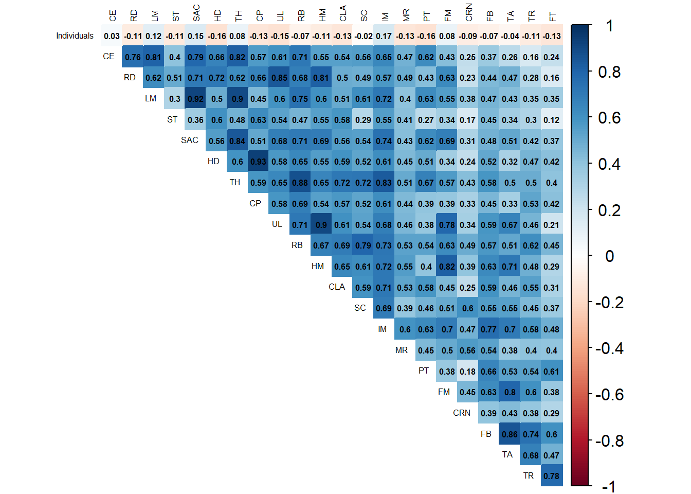
corrplot(cor_matrix, #correlation matrix
method = "color", #show coloured blocks
is.corr = TRUE, #input matrix is a correlation matrix
type = "upper", #show only upper diagonal of correlogram
order = "AOE", #Hierarchical clustering order
hclust.method = "average", #using the average linkage distance measure
addCoef.col = "black", #show numerical value of coefficient
tl.col = "black", #text color of data label
tl.cex = 0.5, #text size of data label
rect.lwd = 3,#text size of data label
tl.srt = 90, #text rotation of data label
cl.cex = 1, #text size of color-legend label
number.cex = 0.5, #text size of correlation coefficient
diag = FALSE, #hide coefficient on the principal diagonal
)corrplot(cor_matrix, #correlation matrix
method = "color", #show coloured blocks
is.corr = TRUE, #input matrix is a correlation matrix
type = "upper", #show only upper diagonal of correlogram
order = "hclust", #Hierarchical clustering order
hclust.method = "average", #using the average linkage distance measure
addCoef.col = "black", #show numerical value of coefficient
tl.col = "black", #text color of data label
tl.cex = 0.5, #text size of data label
rect.lwd = 3,#text size of data label
tl.srt = 90, #text rotation of data label
cl.cex = 1, #text size of color-legend label
number.cex = 0.5, #text size of correlation coefficient
diag = FALSE, #hide coefficient on the principal diagonal
)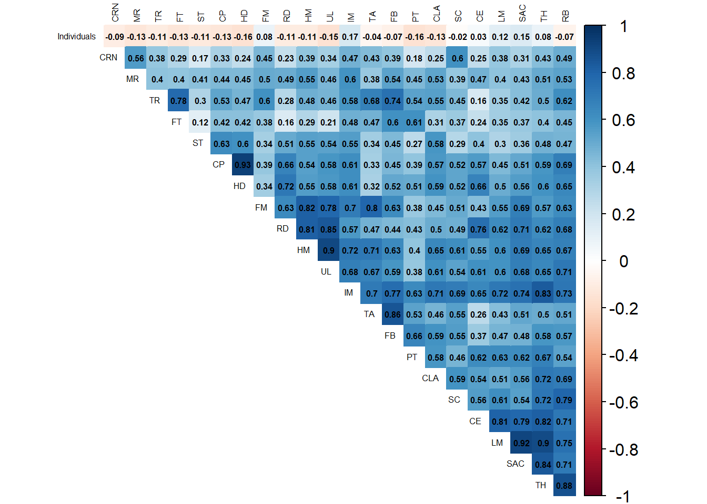
Based on feature correlation and clustering, merge bone subcategories into its categories:
“Vertebra”= {“Cervical”, “Thoracic”, “Lumbar”, “Sacrum”,“Rib”}
“Arm” = {“Humerus”, “Radius”, “Ulna”}
“Leg” = {“Femur”, “Tibia”, “Fibula” }
“Extremities”: {“Carpal”, “Tarsal”, “Hand..metacarpals…manual.phalanges.”, “Foot..metatarsals…pedal.phal
## Define data_cor data set
data_cor = merge_bone_cat_by_mean(data)Define list of data sets to work with:
list_of_dfs <- list(data, data[columns_rf_sup] , data[columns_rf], data_cor)Dimension Reduction
PCA
# PCA
data_pca <- data |> select(-all_of(columns_to_count))
pca_result <- prcomp(data_pca, center = TRUE, scale. = TRUE)
X_pca <- pca_result$x[,1:6]
X_pca PC1 PC2 PC3
Hummingbird_Pueblo_Pueblo_I -6.26317879 -0.320029809 -0.20637458
Pottery_Mound_Pueblo_IV -3.46053250 -0.341519848 -1.24262554
Kuaua_Pueblo_Pueblo_IV -1.47223558 0.104076543 0.02463646
Dolni_Vestonice_I_DV_3 -5.64964375 -0.566569951 -0.45692040
Dolni_Vestonice_IITriple_Burial -5.30490604 -1.026545060 0.54731019
Skhul_Layer_B 0.06259373 0.040342934 1.34992192
Qafzeh_Couche_XVII -2.87764706 2.883921727 -0.17493665
Regourdou -3.59991607 -2.252717617 -1.20648644
La_Chapelle_aux_Saints -2.99202091 -0.591248542 0.76900083
Tabun_Layer_C -2.72465305 2.067379059 2.01500293
Shanidar_Layer_D_Upper -1.96247497 1.223255613 0.19064527
Shanidar_Layer_D_Lower 0.39753093 0.168516729 0.33402056
Kebara_Couche_XII -4.02401790 -4.889692557 -0.37561118
Fontbregoua_H1 4.48737338 0.020846225 -0.09667296
Fontbregoua_H3 4.08507105 -0.440508594 0.89125408
Gran_Dolina_TD6 4.19439527 -0.873493275 -1.14162158
El_Mirador_MIR4A 4.64367684 0.079903147 -0.18288674
Gough's_Cave 0.92754114 -0.456272858 2.29031395
5MT_3 2.90828608 -0.177352598 -0.57699858
5MT_10010_Feature_3 0.84122164 -0.808638096 -0.07707210
El_Miron -0.64398800 1.934126246 -4.15994239
La_Tolita_Cama_de_Huesos 1.38811463 0.914110426 1.70221765
Crow_Creek 1.19704337 -0.487656339 0.26217967
Krapina 4.93610728 -0.418012389 -0.66216706
Liang_Bua_Layer_R 2.56046707 1.310927542 -0.08385356
Liang_Bua_Layer_OQ 6.03808819 -1.084174068 -1.07369490
Dmanisi_Layer_B1y 4.83659534 0.127247976 -0.60458202
Malapa -1.45878129 0.614354380 1.07095513
AL_333 5.16730056 -0.384303204 -0.46063482
Unscavenged_human_corpses_WA -5.78599938 -0.613141479 -0.72923300
Scavenged_human_corpses_WA -1.73450282 -0.520784121 -0.71662546
Scavenged_human_corpses_NM 1.89463764 0.130865192 0.19477716
Scavenged_human_corpse_NC -3.79314818 3.908920361 -1.52867413
Mapungubwe_leopard_kills -1.17174467 -0.001577161 1.54042039
Leopard_refuse -0.23560018 0.988415687 2.00288836
Misgrot_Cave 1.24755293 -0.460578797 0.66035639
Dinaledi 3.34139406 0.197606577 -0.08828686
PC4 PC5 PC6
Hummingbird_Pueblo_Pueblo_I -1.20307669 0.02419989 0.1381056
Pottery_Mound_Pueblo_IV 0.05209118 0.35194585 1.5493218
Kuaua_Pueblo_Pueblo_IV 0.53867719 0.27789869 0.6616043
Dolni_Vestonice_I_DV_3 1.21205451 0.15138434 0.2853252
Dolni_Vestonice_IITriple_Burial 1.18994706 0.35897512 -1.7183274
Skhul_Layer_B -0.11848682 0.17383586 -0.1579496
Qafzeh_Couche_XVII -2.90311845 0.07511400 2.0184885
Regourdou -1.77531862 3.09210814 -1.4355891
La_Chapelle_aux_Saints 2.36284095 0.86298120 -0.3741919
Tabun_Layer_C -2.47673302 -0.64867075 -0.7190700
Shanidar_Layer_D_Upper 0.98359008 0.22458109 0.1172693
Shanidar_Layer_D_Lower 0.28197200 -0.35654922 0.6859672
Kebara_Couche_XII -1.10313251 -2.27059630 0.3727596
Fontbregoua_H1 0.01633441 -1.49032928 -0.5512797
Fontbregoua_H3 0.10882003 2.02895711 1.0087580
Gran_Dolina_TD6 -0.66308678 0.80271122 -0.5258407
El_Mirador_MIR4A 0.20534252 -1.43134695 -0.2820343
Gough's_Cave 0.26682942 -0.46007152 -0.2632049
5MT_3 -0.74601570 0.29295628 -0.6406399
5MT_10010_Feature_3 0.29838320 -0.82973403 0.8749436
El_Miron -0.09993232 -1.55101483 -0.6612350
La_Tolita_Cama_de_Huesos 0.07287200 0.79114048 -0.8019716
Crow_Creek 1.80076188 0.29881872 -0.4549447
Krapina 0.12331675 0.41259862 0.2999676
Liang_Bua_Layer_R -0.94737284 1.30632083 -0.3698211
Liang_Bua_Layer_OQ -0.32350050 1.22295229 0.6674023
Dmanisi_Layer_B1y 0.07032173 -1.42515939 -0.4373536
Malapa -2.42422866 -0.99726590 -2.0257576
AL_333 -0.34065423 0.53575980 0.2984484
Unscavenged_human_corpses_WA -0.17839589 0.13195076 1.1578364
Scavenged_human_corpses_WA 0.76358146 -0.56542311 -0.4231099
Scavenged_human_corpses_NM 1.23606193 -0.84398156 -0.6770601
Scavenged_human_corpse_NC 2.23706131 0.44667457 -0.5817417
Mapungubwe_leopard_kills 0.92654786 -0.14366057 0.6963865
Leopard_refuse 0.39796053 -0.39926089 0.9600784
Misgrot_Cave 0.49493682 -0.88642869 0.9726558
Dinaledi -0.33725179 0.43562812 0.3358044## Plot 3D pca
df_X_pca = as.data.frame(X_pca)
plot_ly(df_X_pca,x=~PC1,y=~PC2,z=~PC3, color = ~label, type = 'scatter3d', mode = 'markers')Warning in RColorBrewer::brewer.pal(N, "Set2"): n too large, allowed maximum for palette Set2 is 8
Returning the palette you asked for with that many colors
Warning in RColorBrewer::brewer.pal(N, "Set2"): n too large, allowed maximum for palette Set2 is 8
Returning the palette you asked for with that many colors# Perform PCA
pca_result <- prcomp(data_pca, scale. = TRUE)
# Calculate cumulative variance explained by each component
var_explained <- cumsum(pca_result$sdev^2 / sum(pca_result$sdev^2))
# Optional: Create a scree plot to visualize the variance explained
ggplot(as.data.frame(var_explained), aes(x = seq_along(var_explained), y = var_explained)) +
geom_line() +
geom_point() +
geom_hline(yintercept = 0.95, linetype = "dashed", color = "red") +
xlab("Number of Principal Components") +
ylab("Cumulative Variance Explained") +
ggtitle("Scree Plot Showing Cumulative Variance Explained by PCA Components")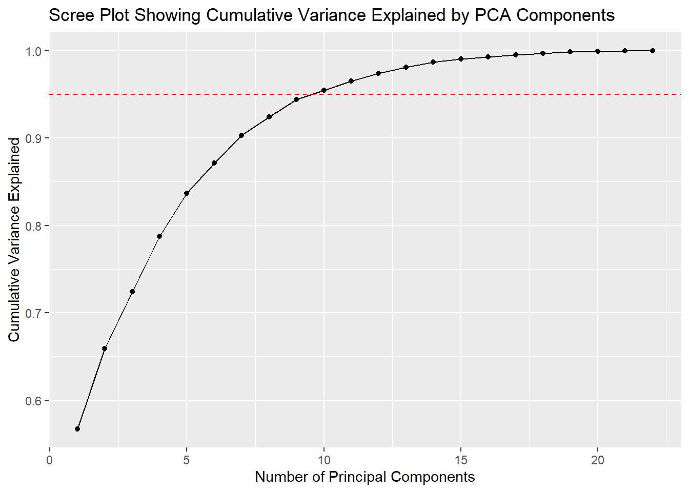
LDA
bottom page
#library(MASS)
# LDA
#cols_lda <- setdiff(names(data), c("Type","Individuals", "Cluster_Pnas"))
#data_lda <- data[cols_lda]
#lda_result <- lda(AccumulationType ~ ., data = data_lda)
#X_lda <- as.data.frame(predict(lda_result, newdata = data_lda)$x)
# Create a 3D scatter
#plot_ly(X_lda, x = ~LD1, y = ~LD2, z = ~LD3, color = ~data$AccumulationType, type = 'scatter3d', mode = 'markers')# LDA
#cols_lda <- setdiff(names(data), c("AccumulationType","Individuals", "Cluster_Pnas"))
#data_lda <- data[cols_lda]
#lda_result <- lda(Type ~ ., data = data_lda)
#X_lda <- as.data.frame(predict(lda_result, newdata = data_lda)$x)
# Create a 3D scatter
#plot_ly(X_lda, x = ~LD1, y = ~LD2, z = ~LD3, color = ~data$Type, type = 'scatter3d', mode = 'markers')amend Dataframe list with X_pca[,c(1:6)] and X_lda
list_of_dfs <- list(data, data[, columns_rf_sup], data[, columns_rf]
#,data_cor,
,X_pca[, 1:6]
#,X_lda
)Best K
Ellbow method
library(cluster)
library(broom)
set.seed(42)
cols_km <- setdiff(names(data), c("Type","AccumulationType","Individuals", "Cluster_Pnas"))
data_km <- data[cols_km]
# Create 10 models with 1 to 10 clusters
kclusts <- tibble(k = 1:7) %>%
mutate(
model = map(k, ~ kmeans(x = data_km, centers = .x, nstart = 20)),
glanced = map(model, glance)
) %>%
unnest(cols = c(glanced))
# View results
kclusts%>%
ggplot(mapping = aes(x = k, y = tot.withinss)) +
geom_line(size = 1.2, alpha = 0.5, color = "blue") +
geom_point(size = 2, color = "blue")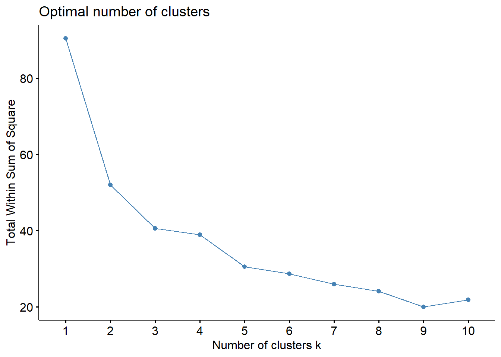
library(cluster)
library(factoextra)
#create plot of number of clusters vs total within sum of squares
fviz_nbclust(data_km, kmeans, method = "wss")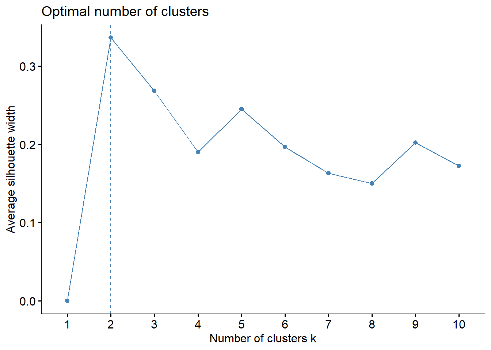
Silhouette method
fviz_nbclust(data_km, FUN=kmeans, method = "silhouette")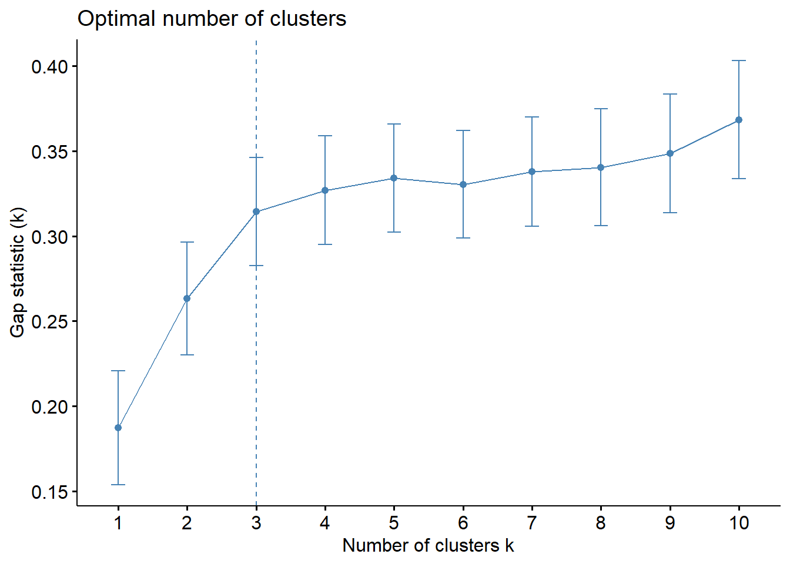
gap_stat <- clusGap(data_km, FUN = kmeans, nstart = 25, K.max = 10, B = 50)
fviz_gap_stat(gap_stat)Modeling
# Load necessary libraries
library(factoextra)
library(cluster)
#Perform K-means clustering
set.seed(42)
kmeans_result <- kmeans(data_km, centers = 3, nstart = 25)
# The cluster assignments are stored in kmeans_result$cluster
sub_grp <- kmeans_result$cluster
# Visualize the clusters
fviz_cluster(list(data = data_km, cluster = sub_grp))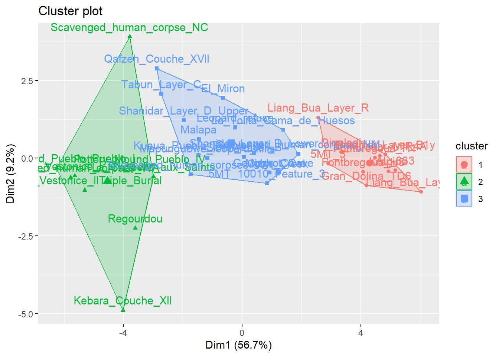
Eval
# Perform K-means clustering on the training set
set.seed(42)
kmeans_result <- kmeans(data_km, centers = 3, nstart = 25)
# Assign test set points to nearest clusters
get_nearest_cluster <- function(point, centers) {
distances <- apply(centers, 1, function(center) dist(rbind(center, point)))
return(which.min(distances))
}
# Apply the function to each row in the test set
cluster_assignments_test <- apply(sh, 1, get_nearest_cluster, centers = kmeans_result$centers)Warning in rbind(center, point): number of columns of result is not a multiple
of vector length (arg 1)Warning in dist(rbind(center, point)): NAs introduced by coercionWarning in rbind(center, point): number of columns of result is not a multiple
of vector length (arg 1)Warning in dist(rbind(center, point)): NAs introduced by coercionWarning in rbind(center, point): number of columns of result is not a multiple
of vector length (arg 1)Warning in dist(rbind(center, point)): NAs introduced by coercionsh_km = sh[cols_km]
# Combine the training and test sets for visualization
combined_df <- rbind(data_km, sh_km)
combined_clusters <- c(kmeans_result$cluster, cluster_assignments_test)
# Visualize with fviz_cluster
fviz_cluster(list(data = combined_df, cluster = combined_clusters))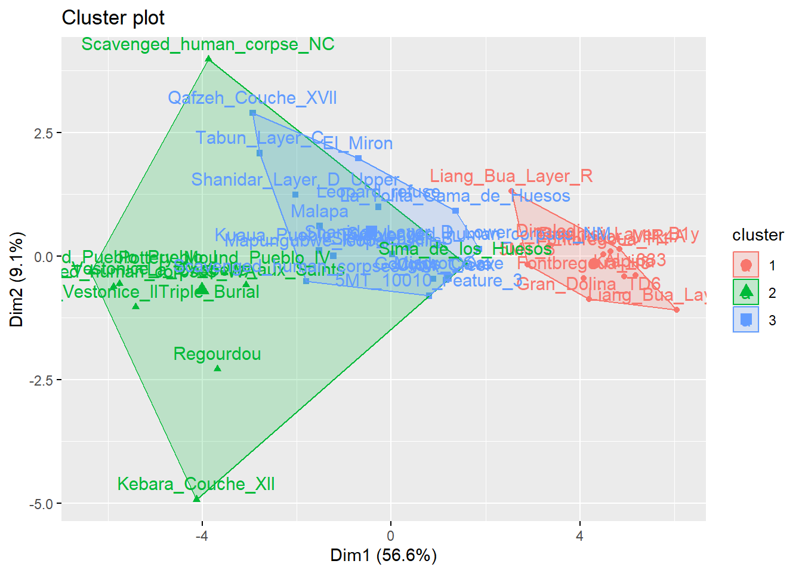
# Load necessary libraries
library(factoextra)
library(cluster)
library(dbscan)
# List of dataframes for evaluation
list_of_dfs <- list(data_km,data[, columns_rf_sup]
, data[, columns_rf]
#, data_cor
#,X_lda
,X_pca[, 1:6]
)
# Number of clusters to evaluate for K-means
k_values <- c(3, 4, 5)
# Hyperparameters for DBSCAN (example ranges)
eps_values <- seq(0.1, 1, 0.2)
minPts_values <- c(5, 10, 15)
# Parameters for hierarchical clustering
hclust_methods <- c("ward.D", "single", "complete", "average")
# List to store results and best models
results <- list()
best_models <- list(kmeans = list(score = -Inf, model = NULL),
dbscan = list(score = -Inf, model = NULL),
hclust = list(score = -Inf, model = NULL))
# Function to perform K-means clustering
perform_kmeans <- function(data, k, method) {
set.seed(42)
kmeans_result <- kmeans(data, centers = k, nstart = 25, algorithm = method)
silhouette_score <- mean(silhouette(kmeans_result$cluster, dist(data))[, 3])
return(list(cluster = kmeans_result$cluster, score = silhouette_score))
}
# Function to perform DBSCAN clustering
perform_dbscan <- function(data, eps, minPts) {
# Perform DBSCAN clustering
dbscan_result <- dbscan::dbscan(data, eps = eps, minPts = minPts)
# Exclude noise points (cluster = 0) from silhouette score calculation
valid_clusters <- dbscan_result$cluster[dbscan_result$cluster != 0]
valid_data <- data[dbscan_result$cluster != 0, ]
# Check if there are valid clusters to avoid errors in silhouette calculation
if (length(unique(valid_clusters)) > 1) {
silhouette_score <- mean(silhouette(valid_clusters, dist(valid_data))[, 3])
} else {
# Assign a default low score if there's only one cluster or none
silhouette_score <- -1
}
return(list(cluster = dbscan_result$cluster, score = silhouette_score))
}
# Function to perform hierarchical clustering
perform_hclust <- function(data, method, k) {
hc <- hclust(dist(data), method = method)
clusters <- cutree(hc, k = k)
silhouette_score <- mean(silhouette(clusters, dist(data))[, 3])
return(list(cluster = clusters, score = silhouette_score))
}
# Loop through each dataframe
for (i in seq_along(list_of_dfs)) {
df <- list_of_dfs[[i]]
# K-means
for (k in k_values) {
for (method in c("Hartigan-Wong", "Lloyd", "Forgy",
"MacQueen")) {
result <- perform_kmeans(df, k, method)
if (result$score > best_models$kmeans$score) {
best_models$kmeans <- list(score = result$score, model = result$cluster, dataframe = i, k = k, method = method)
}
}
}
# DBSCAN
for (eps in eps_values) {
for (minPts in minPts_values) {
result <- perform_dbscan(df, eps, minPts)
if (result$score > best_models$dbscan$score) {
best_models$dbscan <- list(score = result$score, model = result$cluster, dataframe = i, eps = eps, minPts = minPts)
}
}
}
# Hierarchical Clustering
for (method in hclust_methods) {
for (k in k_values) {
result <- perform_hclust(df, method, k)
if (result$score > best_models$hclust$score) {
best_models$hclust <- list(score = result$score, model = result$cluster, dataframe = i, k = k, method = method)
}
}
}
}Warning: did not converge in 10 iterations
Warning: did not converge in 10 iterations
Warning: did not converge in 10 iterations
Warning: did not converge in 10 iterations
Warning: did not converge in 10 iterations
Warning: did not converge in 10 iterations
Warning: did not converge in 10 iterations
Warning: did not converge in 10 iterations
Warning: did not converge in 10 iterations
Warning: did not converge in 10 iterations
Warning: did not converge in 10 iterationsWarning: empty cluster: try a better set of initial centers
Warning: empty cluster: try a better set of initial centersWarning: did not converge in 10 iterationsWarning: empty cluster: try a better set of initial centers
Warning: empty cluster: try a better set of initial centers# Best models
best_models$kmeans
$kmeans$score
[1] 0.4212028
$kmeans$model
Hummingbird_Pueblo_Pueblo_I Pottery_Mound_Pueblo_IV
1 1
Kuaua_Pueblo_Pueblo_IV Dolni_Vestonice_I_DV_3
4 1
Dolni_Vestonice_IITriple_Burial Skhul_Layer_B
1 4
Qafzeh_Couche_XVII Regourdou
4 1
La_Chapelle_aux_Saints Tabun_Layer_C
4 1
Shanidar_Layer_D_Upper Shanidar_Layer_D_Lower
4 4
Kebara_Couche_XII Fontbregoua_H1
1 3
Fontbregoua_H3 Gran_Dolina_TD6
3 3
El_Mirador_MIR4A Gough's_Cave
3 4
5MT_3 5MT_10010_Feature_3
2 4
El_Miron La_Tolita_Cama_de_Huesos
3 3
Crow_Creek Krapina
3 3
Liang_Bua_Layer_R Liang_Bua_Layer_OQ
3 3
Dmanisi_Layer_B1y Malapa
3 2
AL_333 Unscavenged_human_corpses_WA
3 4
Scavenged_human_corpses_WA Scavenged_human_corpses_NM
2 3
Scavenged_human_corpse_NC Mapungubwe_leopard_kills
2 4
Leopard_refuse Misgrot_Cave
4 4
Dinaledi
3
$kmeans$dataframe
[1] 3
$kmeans$k
[1] 4
$kmeans$method
[1] "Hartigan-Wong"
$dbscan
$dbscan$score
[1] 0.5321361
$dbscan$model
[1] 1 1 1 1 1 1 1 1 1 1 1 2 1 2 2 2 2 1 2 1 2 2 2 2 2 2 2 1 2 0 1 2 0 0 0 2 2
$dbscan$dataframe
[1] 3
$dbscan$eps
[1] 0.5
$dbscan$minPts
[1] 15
$hclust
$hclust$score
[1] 0.4259014
$hclust$model
Hummingbird_Pueblo_Pueblo_I Pottery_Mound_Pueblo_IV
1 2
Kuaua_Pueblo_Pueblo_IV Dolni_Vestonice_I_DV_3
2 1
Dolni_Vestonice_IITriple_Burial Skhul_Layer_B
1 2
Qafzeh_Couche_XVII Regourdou
2 1
La_Chapelle_aux_Saints Tabun_Layer_C
2 1
Shanidar_Layer_D_Upper Shanidar_Layer_D_Lower
2 2
Kebara_Couche_XII Fontbregoua_H1
1 3
Fontbregoua_H3 Gran_Dolina_TD6
3 3
El_Mirador_MIR4A Gough's_Cave
3 2
5MT_3 5MT_10010_Feature_3
3 2
El_Miron La_Tolita_Cama_de_Huesos
3 3
Crow_Creek Krapina
3 3
Liang_Bua_Layer_R Liang_Bua_Layer_OQ
3 3
Dmanisi_Layer_B1y Malapa
3 4
AL_333 Unscavenged_human_corpses_WA
3 2
Scavenged_human_corpses_WA Scavenged_human_corpses_NM
3 3
Scavenged_human_corpse_NC Mapungubwe_leopard_kills
4 2
Leopard_refuse Misgrot_Cave
2 3
Dinaledi
3
$hclust$dataframe
[1] 3
$hclust$k
[1] 4
$hclust$method
[1] "average"